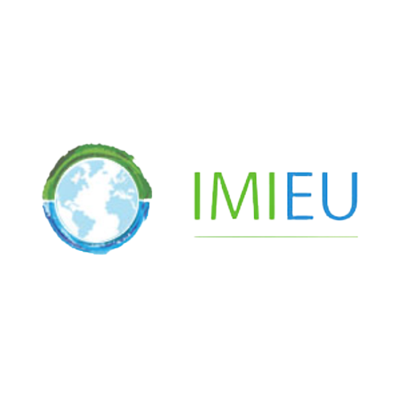
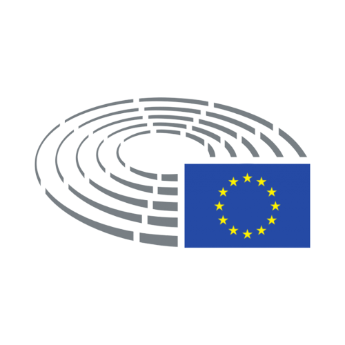
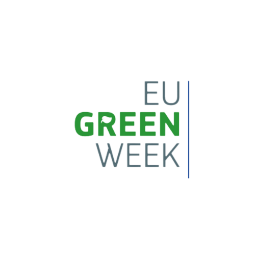

INES Project is the result of Network Growth
About IMI-EU
Decarbonisation is IMIEU’s first priority
Initiation and development of European and international cooperation initiatives in accordance with the Paris Agreement and Decarbonization, with a special emphasis on proving that economic development can go hand in hand with the principles of the Paris Agreement, accelerating decarbonization. Innovative (renewable) energy and Maritime Infrastructure are the main points of emphasis here.
Infrastructure Projects in relation to sustainability, environment and nature effects
For every stage of the development of infrastructure projects, industry/corporates, NGOs, governments, and governmental project organizations receive unbiased guidance and research aimed at reducing investment risk and integrating management plans. This covers initiatives for marine infrastructure, flood defense, transit, renewable energy, and coastal and estuarine infrastructure.
Additionally, it involves mediation in the event of divergent viewpoints on environmental repercussions and mitigation strategies related to the implementation of big infrastructure projects, such as the extension of container ports or the deepening of fairways and sea defenses/climate mitigation
Sustainable Finance, Equity Search, (Voluntary) Carbon Market
Counselling on finance, and equity search is provided, particularly for the upscaling of sustainable innovations in the fields of water and energy, maritime infrastructure or drone/robotics. This is done through with help of a dedicated database of European and international niche-grants, bi-lateral funding and of seed- and venture capital investors, which has been build up over the past decade. Furthermore, we also advice on the use of voluntary carbon credits for the financing of innovative renewable energy is provided upon request.
Intergroup discussion on Biodiversity, Climate Change and Sustainable Development
INES Project on the 5th of July 2022
The hybrid EP Intergroup meeting on 5 July, physically taking place at the European Parliament in Strasbourg, France, was organised by the Intergroup on Biodiversity, Climate Change and Sustainable Development, was titled “The potential of Osmotic Energy to produce clean permanent electricity and green hydrogen – Accelerating the European Union’s energy transition”.This meeting was also organised in the perspective of MEPs Ms Maria da Graça Carvalho and Mr Christophe Grudler initiative on the amendments to the Renewable Energy Directive (REDII) to include ‘Osmotic Energy’.
Meeting Scope
In the meeting, attention was paid to the various forms of Osmotic Power Production in Europe and their state of the art: RED, PRO and Nanotechnology. In addition the EP Members participated in the discussion underlining the essence of this type of power generation to stimulate innovative renewable energy development in order to ensure Europe’s Energy Security. Besides the nanotechnology development of Sweetch Energy (FR) by IMI/INES, also the latest developments at REDstack (NL), Saltpower’s (DEN) and ResourSEAs (IT) demonstration projects were presented
European Green Week 2021
Introduction to SGP Technology and Event Goal
During the European Green Week 2021, IMIEU hosted an informative webinar on the topic of Salinity Gradient Power (SGP). This technology allows for the generation of power through the mixing of fresh and saline water. The goal of the event was to inform policymakers, industry partners, researchers, and the general public about the benefits of SGP technology in achieving the objectives of the New European Green Deal and the new, more ambitious 55% objective for the implementation of renewable energy.
INES Platform and Upscaling Efforts
IMIEU has initiated the INES platform, which coordinates activities related to sharing knowledge, developing pilot projects on an international scale, and further strengthening scientific cooperation. Additionally, through international collaboration, the platform addresses common challenges of the technology such as fouling of membranes and enhancement of quality and capacity, pre-treatment issues, and upscaling of installations. The platform also aims to efficiently adapt to environmental risks to achieve the goals set out in the Paris Agreement and EU Green Deal by mobilizing finance. For the last two years, steps have been taken towards upscaling and in the Netherlands and Denmark, scaled-up solutions of 1MW or more are being developed. During the event, the key partners of the INES platform will present their applications and commercialization of SGP technology.
